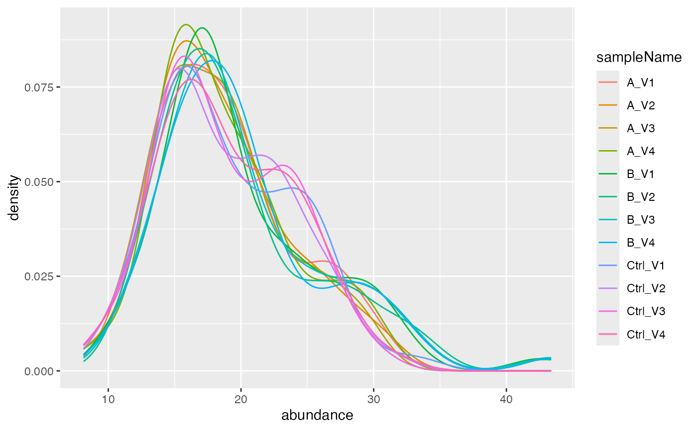
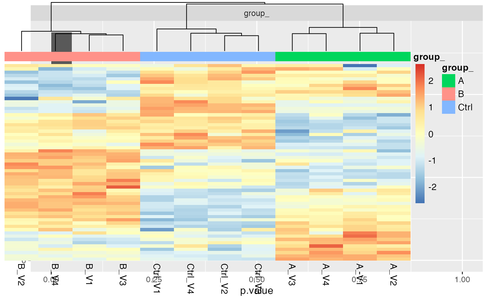
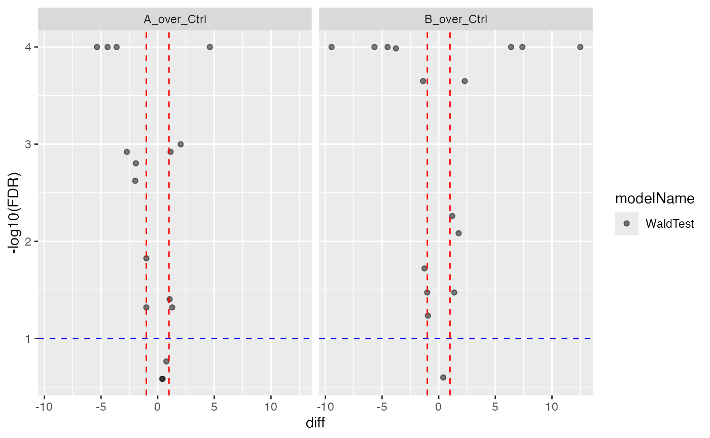

vignettes/SimulateData.Rmd
SimulateData.Rmd
knitr::opts_chunk$set(warning = FALSE, message = FALSE) For proteins: - the proteins have a FC either equal 1, 0. or -1, 10% have 1 80% have 0 and 10% have -1.
What we however are measuring are peptide spectrum matches. Let’s assume we observing peptides.
For peptides:
meanlog = log(20), and sd =
log(1.2).meanlog = log(proteinabundance) and sd =
log(1.2)
peptideAbundances <- prolfqua::sim_lfq_data(PEPTIDE = TRUE)
library(prolfqua)
atable <- AnalysisTableAnnotation$new()
atable$sampleName = "sample"
atable$factors["group_"] = "group"
atable$hierarchy[["protein_Id"]] = "proteinID"
atable$hierarchy[["peptide_Id"]] = "peptideID"
atable$set_response("abundance")
config <- AnalysisConfiguration$new(atable)
adata <- setup_analysis(peptideAbundances, config)
lfqdata <- prolfqua::LFQData$new(adata, config)
lfqdata$is_transformed(TRUE)
lfqdata$remove_small_intensities(threshold = 1)
lfqdata$filter_proteins_by_peptide_count()
lfqdata$factors()## # A tibble: 12 × 2
## sample group_
## <chr> <chr>
## 1 A_V1 A
## 2 A_V2 A
## 3 A_V3 A
## 4 A_V4 A
## 5 B_V1 B
## 6 B_V2 B
## 7 B_V3 B
## 8 B_V4 B
## 9 Ctrl_V1 Ctrl
## 10 Ctrl_V2 Ctrl
## 11 Ctrl_V3 Ctrl
## 12 Ctrl_V4 Ctrl
pl <- lfqdata$get_Plotter()
lfqdata$hierarchy_counts()## # A tibble: 1 × 3
## isotopeLabel protein_Id peptide_Id
## <chr> <int> <int>
## 1 light 16 73
lfqdata$config$table$hierarchy_keys_depth()## [1] "protein_Id"
pl$heatmap()
pl$intensity_distribution_density()
formula_Condition <- strategy_lm("abundance ~ group_")
lfqdata$config$table$hierarchyDepth <- 2
# specify model definition
modelName <- "Model"
Contrasts <- c("B_over_Ctrl" = "group_B - group_Ctrl",
"A_over_Ctrl" = "group_A - group_Ctrl")
lfqdata$subject_Id()## [1] "protein_Id" "peptide_Id"
mod <- prolfqua::build_model(
lfqdata,
formula_Condition)
aovtable <- mod$get_anova()
mod$anova_histogram()## $plot##
## $name
## [1] "Anova_p.values_Model.pdf"
xx <- aovtable |> dplyr::filter(FDR < 0.05)
signif <- lfqdata$get_copy()
signif$data <- signif$data |> dplyr::filter(protein_Id %in% xx$protein_Id)
hmSig <- signif$get_Plotter()$heatmap()
hmSig
lfqdata$config$table$hierarchyDepth <- 1
ag <- lfqdata$get_Aggregator()
ag$medpolish()
protData <- ag$lfq_agg
protData$response()## [1] "medpolish"
formula_Condition <- strategy_lm("medpolish ~ group_")
mod <- prolfqua::build_model(
protData,
formula_Condition)
contr <- prolfqua::Contrasts$new(mod, Contrasts)
v1 <- contr$get_Plotter()$volcano()
v1$FDR
ctr <- contr$get_contrasts()